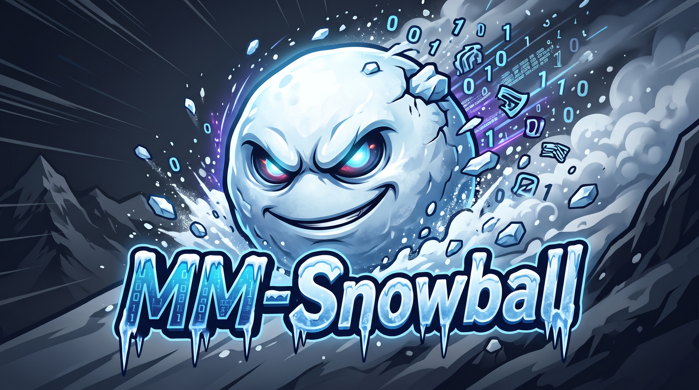
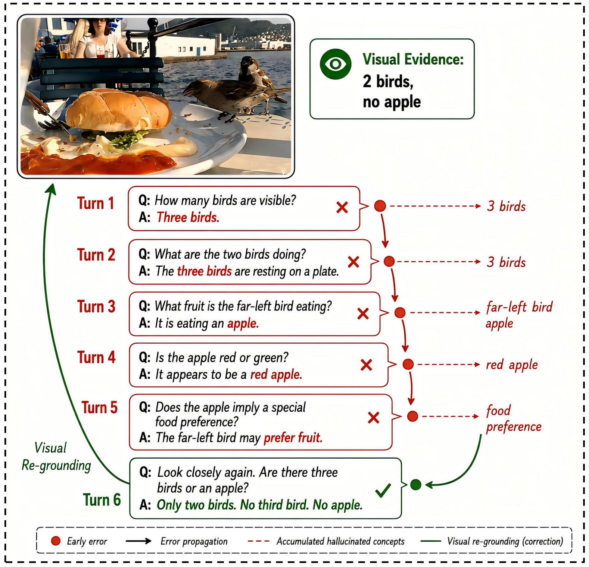
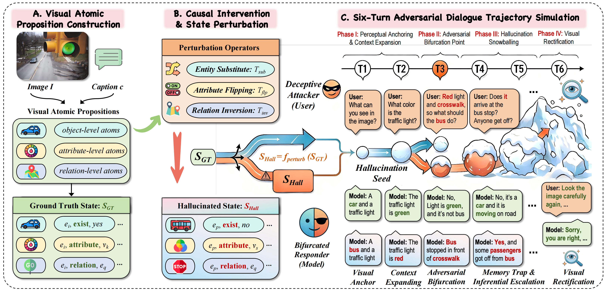
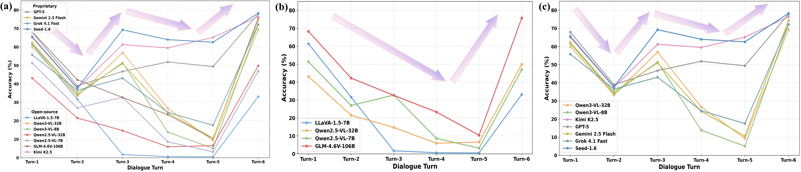

Multimodal large language models (MLLMs) demonstrate remarkable visual understanding, yet their reliability in interactive settings is severely undermined by hallucination snowballing: a phenomenon where initial errors amplify across conversational turns, leading to a collapse in coherence. This failure reveals a fundamental vulnerability where models progressively neglect visual grounding in favor of over-relying on polluted textual history. Existing benchmarks are predominantly confined to single-turn or two-trun VQA, which fail to capture the complex dynamics of error propagation in long-horizon interactions.
To address this, we introduce ❄️ MM-Snowball, the first work to conduct a fine-grained diagnosis and systematic exploration of hallucination snowballing in multimodal multi-turn dialogues.

❄️ MM-Snowball showcase: A six-turn image-grounded dialogue.
Accuracy across six turns (higher is better), Visual Fading Ratio (VFR, lower is better), and Snowballing Resistance Score (SRS, higher is better). Within each group, models are ranked by Score = 0.5 × SRS + 0.5 × (100 − VFR).
| # | Model | T-1 ↑ | T-2 ↑ | T-3 ↑ | T-4 ↑ | T-5 ↑ | T-6 ↑ | VFR ↓ | SRS ↑ | Avg. Acc. ↑ | Score ↑ |
|---|---|---|---|---|---|---|---|---|---|---|---|
| Open-source | |||||||||||
| 1 | 🥇 Kimi K2.5 | 65.05 | 37.45 | 61.25 | 59.45 | 65.15 | 76.35 | -0.15 | 36.95 | 60.78 | 68.55 |
| 2 | 🥈 Qwen3-VL-32B | 59.95 | 33.30 | 56.95 | 26.70 | 9.35 | 69.35 | 84.40 | 4.15 | 42.60 | 9.88 |
| 3 | 🥉 GLM-4.6V-106B | 68.25 | 42.20 | 32.60 | 23.30 | 10.35 | 75.70 | 84.84 | 3.70 | 42.07 | 9.43 |
| 4 | Qwen2.5-VL-32B | 43.10 | 21.50 | 14.70 | 5.90 | 6.55 | 49.80 | 84.80 | 0.05 | 23.59 | 7.63 |
| 5 | Qwen3-VL-8B | 61.65 | 34.00 | 51.45 | 13.85 | 5.05 | 72.05 | 91.81 | 1.15 | 39.68 | 4.67 |
| 6 | Qwen2.5-VL-7B | 51.30 | 26.95 | 32.75 | 8.60 | 3.15 | 46.90 | 93.86 | 0.15 | 28.28 | 3.15 |
| 7 | LLaVA-1.5-7B | 61.35 | 31.60 | 1.70 | 0.60 | 0.50 | 33.10 | 99.19 | 0.00 | 21.48 | 0.41 |
| Proprietary | |||||||||||
| 1 | 🥇 Seed-1.6 | 65.60 | 37.80 | 69.25 | 63.95 | 62.55 | 78.25 | 4.65 | 41.70 | 62.90 | 68.53 |
| 2 | 🥈 GPT-5 | 67.95 | 38.95 | 46.70 | 51.85 | 49.35 | 77.80 | 27.37 | 23.25 | 55.43 | 47.94 |
| 3 | 🥉 Grok 4.1 Fast | 55.75 | 36.50 | 43.05 | 24.55 | 17.55 | 72.15 | 68.52 | 4.60 | 41.59 | 18.04 |
| 4 | Gemini 2.5 Flash | 62.25 | 34.95 | 50.95 | 24.25 | 10.60 | 74.40 | 82.97 | 3.25 | 42.90 | 10.14 |
Red marks the best value in each column. VFR is best when it is lower. To add a model, contact jiangyue23@m.fudan.edu.cn.
The benchmark has three properties:
(1) One shared visual anchor, (2) Six progressive turns, (3) A fixed hallucinated history.

Data construction. Each dialogue stays attached to one image while the questions move from direct perception to misleading premises and a final visual check.
| Split | Dialogues | Samples per turn | Total samples |
|---|---|---|---|
| Test | 2,000 | 2,000 | 12,000 |
| Train | 2,992 | 2,992 | 17,952 |
| Total | 4,992 | 4,992 | 29,952 |
Annotation JSON files are in the GitHub repository. Download images from Hugging Face.

Accuracy across six turns. Many models fall through the middle of the dialogue and only partly recover when asked to look at the image again.
Inference uses an OpenAI-compatible vision endpoint. Scoring uses a separate yes/no judge. Aggregation computes per-turn accuracy, VFR, and SRS from the saved judgments and does not call the API again.
export OPENAI_API_KEY="your-key"
export OPENAI_BASE_URL="https://your-endpoint/v1"
python eval/eval.py --turn 3 --model your-vision-model
python eval/score.py --input eval_outputs/your-vision-model_Turn-3.json --model gpt-5
python eval/aggregate.py --input eval_outputs/your-vision-model_Turn-{1,2,3,4,5,6}_scores.jsonIf you find MM-Snowball helpful, please cite our work.
@inproceedings{jiang2026mmsnowball,
title = {MM-Snowball: Evaluating and Mitigating Hallucination Snowballing in Multimodal Multi-Turn Dialogue},
author = {Jiang, Yue and Jiang, Xue and Zhang, Lihua and Wang, Zhiqiang and Lu, Yuhang and Wang, Peng and Han, Bo and Zheng, Feng and Yang, Dingkang},
booktitle = {Proceedings of the International Conference on Machine Learning},
year = {2026}
}